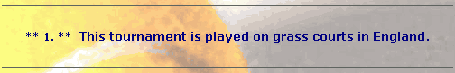
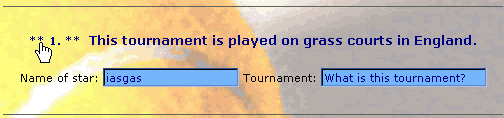
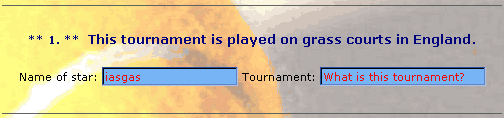
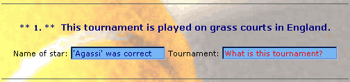
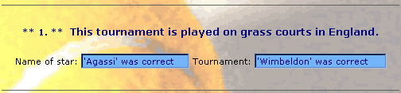

|
| ||
|
| ||
Aaron Bertrand
President, Desktop Innovations
November 17, 1997
Contents
Viewing the Code
Introduction
First, Some History
What is ASP?
About the Game
The Game Architecture
Checking for the Correct Browser
Initializing the Form
Checking the Tennis Star Name
Checking the Tournament Name
Fit for Internet Explorer 4.0
Tailored Background Image
Dynamic Display of Hidden Elements
Custom Form Display
Dynamic HTML
Low-Bandwidth Animation
About the author
About the IE-HTML contests
Author's note, December 8, 1997: To provide cross-browser compatibility, I have updated the contest page to work with Internet Explorer 3.0 and Netscape Navigator, although the user experience will be a little less interactive than with the Internet Explorer 4.0 version.
I have made available, in .zip format, the ASP source for this file as well as the background images. I thought this would be reasonable, since the ASP code isn't displayed when you simply view the source. Please note that this code is provided without warranty of any kind and is copyrighted (Copyright 1997 Desktop Innovations). You are free to reuse the code contained herein; however, by downloading, you agree that the credits in the source will remain intact.
 Download the ASP code and images (zipped, 37K).
Download the ASP code and images (zipped, 37K).
The purpose of the eXplore Summer '97 contest (dubbed "eXplore a MidSummer Night's Dream") was for our peers on the IE-HTML mailing list to create some interesting designs, taking advantage of Internet Explorer technologies and features. The contest was intended to revolve around a Shakespearean theme, although this was not a requirement. Along with designing the humble contest logos (under the guise of my company to avoid any bias or increased exposure), I submitted an entry to the contest. I stayed away from the suggested Shakespearean theme -- instead, I devoted my entry to my favorite sport, tennis.
My entry (see http://www.desktop.on.ca/summer/  ) was originally intended for viewers running Internet Explorer 3.x on either Windows® 95 or Windows NT® 4.0. The contest itself began right around the time of the first preview release of Internet Explorer 4.0 (affectionately nicknamed "PP1"), so naturally I was inclined to experiment with, and make use of, the new Internet Explorer 4.0 features, mainly Dynamic HTML (DHTML). As the design took shape, I became convinced that the end product should only be viewed in Internet Explorer 4.0 (not due to any real deficiency in Internet Explorer 3.x, but to take advantage of all the new features of Internet Explorer 4.0). When Internet Explorer 4.0 Preview 2 came out, I discovered that some of the DHTML features (such as image transitions) had been switched from an ActiveX™ control base to a Cascading Style Sheets (CSS) base. So, I soon saw the need to once again limit my audience (or else code multiple DHTML methods for various browsers, but at the time I was pretty busy, so I ruled that option out). I decided that the quickest method of detecting browser versions would be to use Active Server Pages (ASP), which turned out to be a focus of the design.
) was originally intended for viewers running Internet Explorer 3.x on either Windows® 95 or Windows NT® 4.0. The contest itself began right around the time of the first preview release of Internet Explorer 4.0 (affectionately nicknamed "PP1"), so naturally I was inclined to experiment with, and make use of, the new Internet Explorer 4.0 features, mainly Dynamic HTML (DHTML). As the design took shape, I became convinced that the end product should only be viewed in Internet Explorer 4.0 (not due to any real deficiency in Internet Explorer 3.x, but to take advantage of all the new features of Internet Explorer 4.0). When Internet Explorer 4.0 Preview 2 came out, I discovered that some of the DHTML features (such as image transitions) had been switched from an ActiveX™ control base to a Cascading Style Sheets (CSS) base. So, I soon saw the need to once again limit my audience (or else code multiple DHTML methods for various browsers, but at the time I was pretty busy, so I ruled that option out). I decided that the quickest method of detecting browser versions would be to use Active Server Pages (ASP), which turned out to be a focus of the design.
Some of you may be wondering what ASP is. ASP (Active Server Pages) is a component of Microsoft's Internet Information Server (IIS)  that gives Web authors flexibility in creating Web sites and Web-based applications. ASP is a browser-independent technology that allows authors to combine HTML with Visual Basic® Scripting Edition (VBScript) code to produce fresh, interactive pages that are easily customizable. Much like Common Gateway Interface (CGI), ASP code runs on the server, but it requires fewer resources -- meaning much faster performance. ASP makes it possible to perform various functions (such as passing form variables from page to page) that previously required either CGI/Perl programming or browsers that supported JavaScript and frames. In this instance, ASP also allowed me to focus on the design of my game, rather than spend most of my time debugging it.
that gives Web authors flexibility in creating Web sites and Web-based applications. ASP is a browser-independent technology that allows authors to combine HTML with Visual Basic® Scripting Edition (VBScript) code to produce fresh, interactive pages that are easily customizable. Much like Common Gateway Interface (CGI), ASP code runs on the server, but it requires fewer resources -- meaning much faster performance. ASP makes it possible to perform various functions (such as passing form variables from page to page) that previously required either CGI/Perl programming or browsers that supported JavaScript and frames. In this instance, ASP also allowed me to focus on the design of my game, rather than spend most of my time debugging it.
My contest entry consisted of a word scramble game that tested users' knowledge of today's tennis greats and the tournaments they play in. The game is fairly straightforward: The user is asked to unscramble the name of the star, and then guess the name of the tournament. There are four stars and four tournaments in all; the majority of people who have tried so far have scored correctly on most answers. (While the contest was running, it was set up to automatically e-mail all the entries to me by way of a CGI form; now the e-mail process is manual, but I still get a few entries now and then.) If you submit a wrong answer, the form tells you so and lets you try again. Once you get all the answers right, the form disappears and is replaced with a scrolling "Congratulations." Feel free to try out the game before you digest the rest of this article. It's not quite as exciting as Asteroids, I must admit, but at the time I had few resources and documentation. (Right now, I'm working on a full-blown Internet Explorer 4.0 version of Doom.)
Once you have tried out the game  and can get a sense of what is going on, this article will take you behind the scenes and help you understand how the game works. You will see which technologies are used, how certain effects are achieved, and how continuity is maintained. The focus of the article will be on the use of ASP, but I will also divulge some of the other techniques I have used, including DHTML and enhanced CSS.
and can get a sense of what is going on, this article will take you behind the scenes and help you understand how the game works. You will see which technologies are used, how certain effects are achieved, and how continuity is maintained. The focus of the article will be on the use of ASP, but I will also divulge some of the other techniques I have used, including DHTML and enhanced CSS.
In this section, I will examine the process of starting up the game and answering one of the four trivia questions to give you a sense of how the game works.
Because I've used several Internet Explorer 4.0-specific features, I have to make sure that only Internet Explorer 4.0 users will see the page (other browsers will cause errors and/or will not display properly). I used the code below to differentiate between the displays for different browsers. (Note that ASP code is enclosed in <% and %> delimiters, and is processed on the server BEFORE the HTML is parsed for the viewer.)
<%
br1 = lcase(request.servervariables("http_user_agent"))
dim ie4
ie4="false" ' sets initial value, unless it passes the following:
if instr(br1,"95")>0 or instr(br1,"nt")>0 or instr(br1,"98")>0 then
if instr(br1,"mozilla/4.0")>0 and instr(br1,"msie 4")>0 then
if instr(br1,"4.0b1")<=0 then
ie4="true"
end if
end if
end if
%>
The first if line makes sure that the operating system is one of the following: Windows 95, Windows NT, or Windows 98 (yes, I was looking ahead a bit). The second if line makes sure that the user agent string contains both "MSIE 4" and "Mozilla/4.0" -- indicating that it is, in fact, one of the later Internet Explorer 4.0 builds. The third if statement ensures that the viewer is not using the first preview version of Internet Explorer 4.0 (PP1), since I use image transitions, which moved to a CSS base after that version. Moving right along, here is how I conditionally present the page:
<% if ie4 then %>
All my IE 4.0 HTML and code goes here
<% else %>
<body>I apologize for any inconvenience; however, this site
is enhanced for IE 4.0</body>
<% end if %>
This code makes sure that only Internet Explorer 4.0 users see the page as intended. This technique eliminates users with Internet Explorer 4.0 Platform Preview 1 and the earlier betas, as well as all other browsers. The line "All my IE 4.0 HTML and code goes here" is a placeholder for the code and techniques that I describe in the remainder of this article.
The next step is to initialize the form for the word scramble game. I use ASP as follows to "request" form elements from the browser:
<% star1 = trim(lcase(request.queryString("star1")))
tourn1 = trim(lcase(request.queryString("tourn1"))) %>
The two variables star1 and tourn1 represent the first star (Agassi) and tournament (Wimbledon), respectively. I use trim() to discard any blank spaces the user might have entered, and the VBScript function lcase() to avoid having to write statements like IF star1="Agassi" OR IF star1="agassi" OR IF star1="AGASSI" OR IF … -- I think you get the point. If star1 and tour1 are empty, I determine that this is the user's first visit (or that the form has not been properly submitted). When the page first opens, the form is in the following container:
<form name="tennis" action="default.asp">
The form elements (text boxes) start out as being "hidden" from view (see the Fit for Internet Explorer 4.0 section for details on this feature and the use of CSS for form elements):
<div id="str1" style="display:none"> Name of star: <input class=input1 type="text" name="star1"> Tournament: <input class=input1 type="text" name="tourn1"> </div>
I use the following script to display the form elements when the user moves the mouse over the asterisks preceding each clue. (This script block will continue throughout the rest of the examples, in case you're wondering why it remains open-ended.)
<script language="vbscript">
<% if star1 = "" then %>
sub tourney1_onmouseover()
tennis.star1.value="iasgas"
str1.style.display="inline"
submitter.style.visibility="visible"
end sub
In the example above, the logic is thus: If star1 is blank, the user has not yet submitted the form, so show them the form fields (text boxes) only when the user moves the mouse over the indicated area (see Figure 1). When the mouse hovers over that area (the asterisks), the client-side script first tells the star1 text box to display the scrambled value iasgas (line 1). The second line makes the <span>-entitled str1 (which contains the textboxes for star1 and tourn1) visible (see Figure 2). And finally, the third line makes the Submit button (which is initially within a <span> hidden from view until the form has been activated) visible.

Figure 1. The initial form elements, before mouseover occurs

Figure 2. The initial form elements, after mouseover occurs
You'll notice how the code above combines server-side VBScript with client-side VBScript. The ASP code executes first, determining whether to return that portion of the client-side script to the browser. Only then does the internal subroutine (the onmouseover event) become a component of the client-side page. I use this method to present the form and information in different ways, depending on which stage the user is at.
When the user corrects the scrambled name in the first text box (star1) and submits the form, there are three possibilities for the star1 variable: blank/unchanged, incorrect, or correct. If the value is blank, the following code is re-executed:
<% if star1 = "" then %>
sub tourney1_onmouseover()
tennis.star1.value="iasgas"
str1.style.display="inline"
submitter.style.visibility="visible"
end sub
If the value is incorrect, the following code is executed:
<% elseif star1<>"" and star1<>"agassi" then
if star1<>"'agassi' was correct" then %>
tennis.star1.value="iasgas"
tennis.star1.style.color="red"
str1.style.display="inline"
submitter.style.visibility="visible"
end if
This code re-scrambles the word (line 1), displays it in red (line 2, see Figure 3), and ensures that when the form is resubmitted, this area's form elements are displayed (line 3), as is the Submit button (line 4).

Figure 3. When the "star" value is submitted incorrectly
Otherwise, the following code is executed, indicating that the user entered "Agassi" correctly, either on this try or on a previous try:
<% elseif star1 = "agassi" or star1 = "'agassi' was correct" then %>
tennis.star1.value="'Agassi' was correct"
str1.style.display="inline"
submitter.style.visibility="visible"
<% end if %>
This code displays the correct answer in the star1 text box (see Figure 4), and again ensures that the first form elements, along with the Submit button, are displayed.

Figure 4. When the "star" value is submitted correctly
Next, we move to the tournament value. The user can submit the form after entering both star1 and tourn1, or just one or the other, so each value must be tested in a unique and separate routine. This is a slightly higher performance hit, but it allows the game to be tailored for both "one-shot" people and for "one-step-at-a-time" people.
The first step is to determine if the value tourn1 is blank, which happens when the user erases the current value:
<% if tourn1 = "" then %>
tennis.tourn1.value="What is this tournament?"
If it is blank, it automatically receives the value "What is this tournament?" -- prompting for user input. If the value is not blank, we move on to the next step:
<% elseif tourn1="what is this tournament?" then %>
tennis.tourn1.value="What is this tournament?"
tennis.tourn1.style.color="red"
The code above checks to see if the tourn1 value has not been changed. If this condition is true, the value is reset and changed to red (to indicate that it still needs to be filled in). Next, we check to make sure that the correct value has not been entered, either on a previous try or in the current cycle:
<% elseif tourn1<>"wimbledon" and tourn1<>"'wimbledon' was correct" then
And here is where it gets slightly complicated. The code below went through several versions before I decided on the exact format. If the user didn't submit the correct answer, I wanted to supply custom feedback, telling the user that the exact string they entered was incorrect. So, the first line is actually checking something that can't exist on the first try:
if instr(tourn1,"was incorrect")>0 then
tourn1 = left(tourn1,len(tourn1)-14)
end if %>
tennis.tourn1.value="<%= tourn1 %> was incorrect"
tennis.tourn1.style.color="red"
The if…then sequence checks to see whether this tourn1 value is a resubmitted incorrect answer. If it is, it strips the string from the rest of the inputted value: "was incorrect" are the 14 right characters in tourn1, so the rest is left(tourn1,len(tourn1)-14). If this if condition fails, it is obviously the user's first submission for this field, so since it is an incorrect answer, the "was incorrect" appendage is simply added and the field again turned to red (see Figure 5).
Figure 5. When the "tourn" value is submitted incorrectly
And finally, if all other conditions fail, I assume that the user entered the correct value and display the string "'Wimbledon' was correct" in the default color of the text box (see Figure 6). (Obviously, this code changes for each tournament field.)
<% else %>
tennis.tourn1.value="'Wimbledon' was correct"
<% end if %>
</script>

Figure 6. When the "star" and "tourn" values are submitted correctly
The process above is repeated for each of the other three form field sections. Let's now discuss why this game is more fun and interactive in Internet Explorer 4.0 than in any other browser.
The page loads with a welcoming message box and a background image customized for the user's screen resolution. I decided to do this so that users with smaller screen resolutions could download a smaller image (both in physical dimensions and in file size) to reduce bandwidth and to create a more aesthetically pleasing design for the window.
The screen resolution is captured on the client side within the Internet Explorer 4.0 screen element, as follows:
<script language="vbscript">
if screen.width > 950 then
bgimage = "1"
elseif screen.width > 700 then
bgimage = "2"
else
bgimage = "3"
end if
document.write("<body bgcolor=#ffffff background=")
document.write("back" & bgimage & ".jpg>")
</script>
In the example above, the script dynamically writes the body tag, and inserts the appropriate background image: back1.jpg for users in 1024x768 or greater, back2.jpg for users in 800x600, and back3.jpg for users in 640x480.
Note that the code above doesn't check to see whether the user has their browser maximized. For a background image, this omission is not critical; however, for a table it would be devastating. Imagine using the above code to determine that the user was at a minimum 1024x768 resolution. Under the first condition, you would think it would be safe to construct a 1000-pixel-wide table with an 800-pixel-wide image. What if the user shrinks their browser window to 600x500 to make room for additional windows? To handle that situation, you can capture the browser window height and width using the client-side variables document.body.clientWidth and document.body.clientHeight.
A compelling Internet Explorer 4.0 feature I was able to utilize in my contest entry was the display element. This element lets you dynamically show or hide content, based on either a timing mechanism or user interactivity (e.g., click, mouseover, or mouseout). As I explained earlier, the form elements and Submit button are initially hidden, and then displayed dynamically only when the user moves his or her mouse over the specified regions.
I also used Cascading Style Sheets (CSS) for form elements. CSS allows you to specify characteristics such as font family, font color, and background color for elements such as select lists, input boxes, and text areas -- which is a refreshing change from the rigid default system font and/or Courier New (depending on browser).
Here is a sample:
<input type="text" size=30 style="font-family:verdana;color:red"> <input type="submit" value="Submit" style="cursor:hand">
In the first line, you can see how the color and font face used by the text box are set. The second line provides a feature long missing from forms: an intuitive pointer to a Submit button. Until now, Submit buttons on Web pages have been activated by a regular mouse cursor pointer, not with the more obvious "hand" that we have grown so accustomed to for every other sort of action on the Internet.
Aside from the magically appearing form elements described above, there is another, more subtle form of Dynamic HTML occurring on this page. Scroll to the bottom, and move your mouse over the navy, non-underlined name "Aaron Bertrand." It will turn red and gain an underline.
The mouseover effect has quickly become a fairly common technique in DHTML, but it is often used incorrectly. Many people use the following syntax:
<a href="link" onmouseover="this.style.color='red'" onmouseout="this.style.color='black'">Link</a>
While this syntax is perfectly valid for Internet Explorer 4.0, it will cause error messages in Internet Explorer 3.x and in all versions of Netscape (a message saying something like "'this' has no property named 'style'"). In this case, I could safely use that method, since I am dealing only with Internet Explorer 4.0. But I'm stubborn, and use syntax that has always (along with the help of Internet Explorer 3.x vs. 4.0 discriminating code) worked for me:
<a id="link1" href="link" style="text-decoration:none;color:#000080">Link</a>
<script language="vbscript">
sub link1_onmouseover()
link1.style.color="red"
link1.style.textDecoration="underline"
end sub
sub link1_onmouseout()
link1.style.color="#000080"
link1.style.textDecoration="none"
end sub
</script>
I probably could have used event bubbling for more efficient script, but at the time I didn't know how to do it. (I know better now.)
Transitions were a pleasant surprise with Internet Explorer 4.0. These are fairly hard to explain without providing visual examples, but I'll give it a try. A transition allows you to display an image or text with special effects. For example, you could blur text and have it "fade" into clarity, reacting either at a timed interval or to a user action.
I used a combination of six transition effects, called randomly, to sequentially display and hide different headline text elements. The headline cycles between "Tennis Scramble," "Guess the Stars," and "Name the Tourneys."
The methodology behind this sequence is fully visible in the source code and is beyond the scope of this article. You will find plenty of examples of using transitions and many other facets of DHTML on the Internet Explorer 4.0 CD or on the MSDN Online Web Workshop DHTML, HTML & CSS section.
There are other goodies in the source code for you to find, but you'll have to get all the right answers first! Some of them are in the HTML source, some of them are "hidden" in ASP -- which is why I've provided the ASP code for download. As I said earlier, you are free to use the code, as long as the two-line credit remains intact near the top of the source. Most importantly, have fun with it.
Aaron Bertrand is President of Ontario-based design firm Desktop Innovations. He also holds the position of Director of New Technologies with Waterworks Interactive Inc., a new media design house located in Newport, Rhode Island. Aaron's efforts are currently focused on bridging the gap between server-side entities (ASP, text files, and databases) and client-side elements (VBScript, JavaScript, CSS, and HTML), as well as maximizing the impact of new technologies for Internet Explorer 4.0, such as Dynamic HTML and data binding.
Desktop Innovations: http://www.desktop.on.ca/ 
Waterworks Interactive, Inc.: http://www.waterworksia.com/ 
The members of our public IE-HTML mailing list have held a series of contests to demonstrate their ability to create exciting and effective Web sites using features of Internet Explorer. Members create special sites for each contest, and the list membership votes for their favorite sites. Members enter these contests primarily for the fun of demonstrating what they have learned, in the spirit exhibited in the normal daily mailing list discussions. However, winners do receive prizes contributed by list members and anonymous donors. These contests are run by the list members, and are not sponsored by Microsoft. Occasionally MSDN Online will invite contest winners to submit articles describing particularly innovative aspects of their sites.
Did you find this material useful? Gripes? Compliments? Suggestions for other articles? Write us!
© 1999 Microsoft Corporation. All rights reserved. Terms of use.